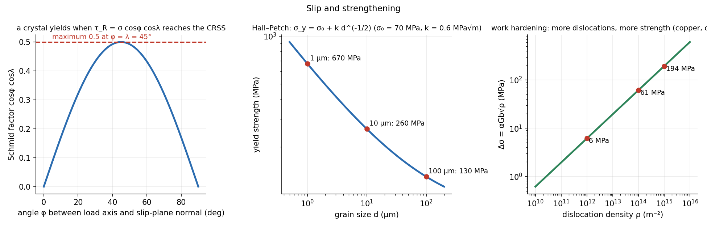

Dislocations, Slip and Strengthening
Real crystals are thousands of times weaker than perfect ones because plastic flow does not slide whole planes: it moves line defects (dislocations) one row of atoms at a time. Every way of strengthening a metal is a way of blocking dislocations: grain boundaries, solute atoms, precipitates, and other dislocations.
Part of Materials and Design - MOC. Previous: Crystal Structures and Packing. Next: Tensile Test, True Stress-Strain and Hardness.
1. Imperfections
| Dimension | Defect | Example |
|---|---|---|
| 0-D (point) | vacancy, self-interstitial, substitutional or interstitial impurity | carbon in iron (interstitial), Zn in Cu (substitutional) |
| 1-D (line) | dislocation: edge (extra half-plane) or screw | carries plastic deformation |
| 2-D (interfacial) | grain boundary, twin boundary, free surface, stacking fault | grain size |
| 3-D (volume) | pores, cracks, inclusions, precipitates, second phases |
An edge dislocation is the edge of an extra half-plane of atoms; the Burgers vector is the lattice displacement it carries, perpendicular to the line for an edge and parallel for a screw. Slip happens when the dislocation glides, one bond at a time, along its slip plane in a slip direction (the slip system, see the table in Crystal Structures and Packing). The stress to glide a dislocation is far less than the stress to shear the whole plane at once, which is why metals are ductile and soft.
2. Schmid's law
A crystal loaded in tension yields when the resolved shear stress on a slip system reaches a material constant, the critical resolved shear stress (CRSS):
is the angle between the load axis and the slip-plane normal, the angle between the load axis and the slip direction. The Schmid factor , reached at .
Example. Copper single crystal ( MPa), , :
Orientation matters by up to a factor of infinity (if or is no slip system is stressed). Polycrystals average over random orientations: yield stress is about –.

3. Strengthening = obstructing dislocations
| Mechanism | How it blocks | Formula or effect |
|---|---|---|
| Grain-size refinement | boundaries stop slip; dislocations pile up | Hall–Petch |
| Solid solution | solute atoms strain the lattice and snag dislocations | (brass is stronger than copper) |
| Strain (work) hardening | dislocations multiply and tangle | Taylor: |
| Precipitation | particles must be cut or bypassed | Orowan: ( = particle spacing) |
Hall–Petch. For a mild steel with MPa and MPa√m: grain size 100 µm gives 130 MPa, 10 µm gives 260 MPa, 1 µm gives 670 MPa: refining grains is the one mechanism that also improves toughness.
Taylor hardening. Copper ( GPa, nm, ): dislocation density m⁻² (annealed) gives 6 MPa; gives 61 MPa; (heavily cold-worked) gives 194 MPa.
Recovery, recrystallisation, grain growth. Cold work stores dislocations; heating relieves stress (recovery, 0.3 ), forms new strain-free grains (recrystallisation, about ), then the grains coarsen. Hot working and annealing exploit this.
- Measuring from the slip plane instead of its normal.
- Applying Hall–Petch to nanometre grains (below about 20 nm grain-boundary sliding makes it reverse).
- Thinking strength comes only from adding alloying elements: processing (grain size, work hardening, heat treatment) changes it by factors of 5–10.
- Expecting both high strength and ductility from work hardening: ductility falls.
Predict first: a metal is cold-worked and then heated to 600 °C for an hour. Stronger or weaker?
Weaker, if the temperature is above the recrystallisation temperature: new, dislocation-free grains replace the work-hardened ones and the strength returns almost to the annealed value while ductility recovers.
Why are single crystals of HCP metals so anisotropic?
They have only one close-packed plane (basal) and three slip directions in it. A load nearly perpendicular to that plane resolves almost no shear () and the crystal is hard; a 45° load is very soft.
4. Connections
- Mohr's Circle for Stress — the resolved shear stress is the stress transformation of Plane Stress Transformation onto the slip plane.
- Tensile Test, True Stress-Strain and Hardness — work hardening is the slope of the true stress–strain curve.
- Heat Treatment of Steel - TTT and CCT Diagrams — martensite is the hardest steel because carbon in solution and a huge dislocation density block slip.
- Torsion of Circular Shafts — shear yielding on the 45° plane and the CRSS idea in a polycrystal.